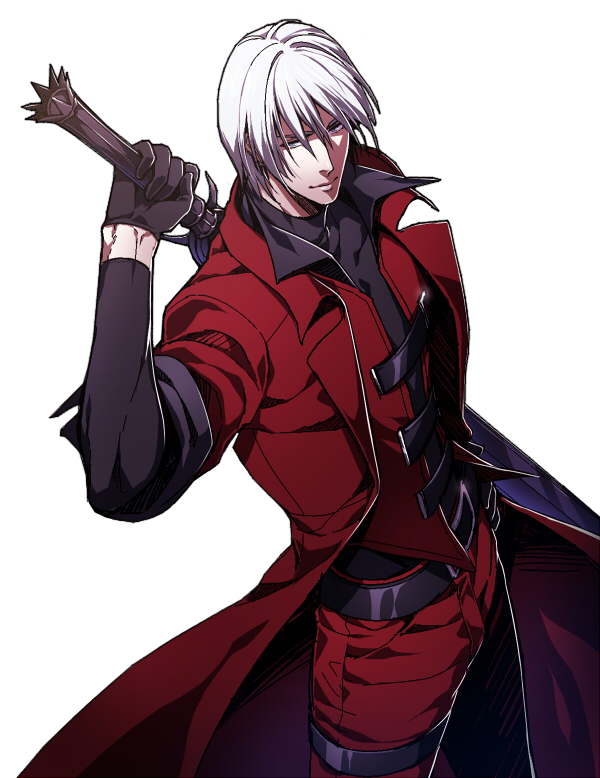
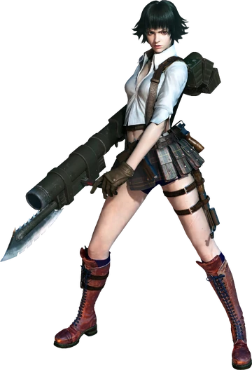

Una noche de misterio en la ciudad de Red Grave, donde el tiempo mismo se ha detenido y solo un cazador experimentado puede restaurar el orden natural antes de que las sombras consuman cada rincon de la metropolis.
Acompana a Dante en esta investigacion llena de enigmas antiguos, reliquias olvidadas y secretos ocultos dentro de la arquitectura gotica mas antigua de la region.
Comenzar historia
Cazador de demonios con una actitud relajada pero siempre dispuesto a enfrentar cualquier amenaza sobrenatural. Aunque suele tomarse los encargos con humor y prefiere disfrutar de una buena rebanada de pizza en su oficina, posee una determinacion inquebrantable cuando la ciudad corre peligro.

Aliada estrategica y experta en tactica. Su profundo conocimiento sobre la historia oculta de Red Grave y las estructuras antiguas resulta indispensable para descifrar el origen del fenomeno temporal y guiar a Dante hacia el nucleo del problema.
Todo comenzo justo a la medianoche en la tranquila oficina de Devil May Cry. Dante se preparaba para cenar cuando noto que el segundero de su reloj de pared se habia quedado completamente quieto. Al mirar por la ventana, descubrio una espesa niebla de color carmesi cubriendo las calles desiertas y deteniendo por completo el trafico y el movimiento de la ciudad.
Segundos despues, recibio una llamada urgente de Lady. Ella le explico que las lecturas energeticas apuntaban directamente hacia el distrito historico, especificamente a la antigua Torre del Reloj, una estructura abandonada durante decadas cuyo mecanismo parecia haber cobrado vida de forma inexplicable.
Al llegar a la base de la imponente estructura gotica, Dante percibio una presion extrana en el ambiente. Las puertas de hierro estaban selladas por una energia oscura y varias criaturas sombrias custodiaban los pasillos interiores para evitar que alguien subiera hasta la camara principal.
Tras abrirse paso por las escaleras de caracol, Dante llego frente al inmenso engranaje central del Reloj de las Sombras. Las agujas giraban en un bucle infinito que mantenia atrapada a toda la ciudad. Recordando las notas antiguas que Lady le habia enviado antes de entrar, Dante busco una inscripcion oculta en la base de piedra para saber como detener el hechizo sin destruir la torre.
Inscripcion antigua hallada en el pedestal: El flujo del tiempo solo respondera cuando el engranaje central de bronce sea girado tres veces en sentido contrario a las agujas del reloj mientras la luna ilumina el vitral superior.
Siguiendo las instrucciones de la pista antigua, Dante sujeto con firmeza el pesado engranaje central y lo hizo girar en direccion opuesta al movimiento natural del tiempo. Un destello dorado ilumino toda la camara superior, disipando al instante las sombras que custodiaban el mecanismo y deshaciendo la niebla mistica sobre Red Grave.
Con las campanadas volviendo a sonar con normalidad y el trafico retomando su curso en las calles, Dante dio por terminado el encargo. De regreso en la comodidad de su oficina, finalmente pudo sentarse a disfrutar de su merecida cena con una rebanada de pizza caliente mientras la ciudad descansaba en paz.
Volver al inicio